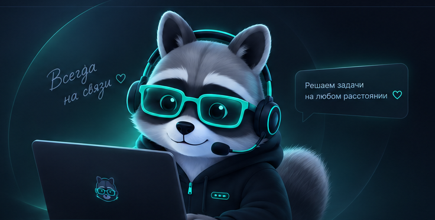
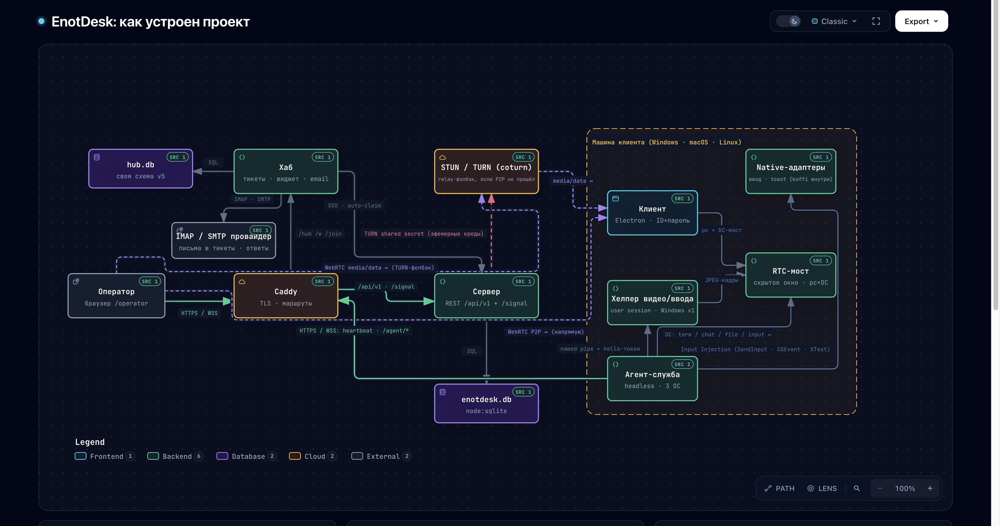

Запуск без установки
Клиент — один файл для Windows, macOS и Linux. Никаких инсталляторов и прав администратора: открыл, подключился, закрыл.
Open source · Self-hosted · AGPL-3.0
Специалист помогает клиенту за пару минут: тот открывает один файл, называет одноразовые ID и пароль — и доступ появляется. Закрыл окно — доступ исчез. Сервер — ваш собственный.

Возможности
Один инструмент для разовых подключений и постоянного обслуживания машин — без облаков третьих сторон.
Клиент — один файл для Windows, macOS и Linux. Никаких инсталляторов и прав администратора: открыл, подключился, закрыл.
Сеанс открывается по одноразовым ID и паролю из обычного чата. Пароль живёт, пока открыто окно: закрыли — доступ исчез.
Подключаться к клиенту можно прямо из браузера — клиент-приложение оператору не требуется.
Агент-служба на постоянных машинах: подключение по заявке с обязательной причиной, PIN-политикой и записью в журнал.
Тикет-система с чатом для сайта, письма из почты и кнопкой «подключиться» прямо в переписке с клиентом.
Сервер ставится на вашу машину за один скрипт: Docker или bare-metal, HTTPS через Caddy, телефония через собственный TURN.
Как устроен
Схема ниже — живая карта проекта: сервер, хаб, службы агентов на трёх ОС, видео-хелпер и путь медиа между машинами.

Полная схема: сигналинг, WebRTC-медиа, DataChannel-каналы (видео, ввод, чат, файлы, терминал) и службы на машине клиента.
Открыть интерактивную схемуСкачать
Файлы берутся напрямую из официальных релизов GitHub. Сервер — tarball с установщиком за один прогон.
Исходный код: github.com/Flint-sega/enotdesk · лицензия AGPL-3.0 · сборка из тегов воспроизводима на CI.